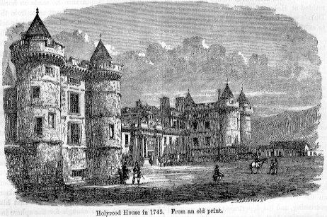

The Mighty General Gathering
An Cruinneachadh iomlan luthmhor
Text Unknown
Captain Simon Fraser Collection N° 191
TuneSequenced by Christian Souchon

Holyrood House (Edinburgh) in 1745

|
"This air is so very characteristic of the event which gave rise to it, that a gentleman in Edinburgh remarked he thought he saw the Highlanders in full trot to Prince Charles's standard, on hearing it played, which should be in a style as quick as possible, and makes an admirable dance"
.
. Fraser (The Airs and Melodies Peculiar to the Highlands of Scotland and the Isles), 1874; No. 90, pg. 34 |
Cet air est si caractéristique de l'événement que son titre évoque, qu'un Edimbourgeois déclara qu'il avait eu, en l'entendant, la vision des Highlanders réunis au grand complet sous l'étendard du Prince Charles. Il faut le jouer avec le tempo le plus élevé possible et c'est un admirable air à danser."
. Fraser (Les Airs et Mélodies propres aux Hautes Terres et aux Iles d'Ecosse), 1816; No. 90, pg. 34. |
|
On the 19th of July 1745 the standard of James III/VIII was raised at
Glenfinnan
. On the same day General Sir
John Cope
at the head of 1500 men left Edinburgh in search of Charles; but, fearing an attack in the Pass of Corryarrick, he changed his proposed route to Inverness, and Charles thus had the undefended south country before him. In the beginning of September he entered
Perth
, having gained numerous accessions to his forces on his march. Crossing the Forth unopposed at the Fords of Frew and passing through
Stirling
and
Linlithgow
, he arrived within a few miles of
Edinburgh
.
On the 16th of September a body of his skirmishers defeated the dragoons of
Colonel Gardiner
in what was known as the "Canter of Coltbrig." His success was still further augmented by his being enabled to enter the city, a few of Cameron's Highlanders having on the following morning, by a happy ruse, forced their way through the Canongate. On the 18th he publicly proclaimed James VIII. of Scotland at the
Market Cross
and occupied
Holyrood
.
Source: Encyclopaedia Britannica 1911 |
Le 17 juillet 1745 l'étendard de Jacques III/VIII fut levé à
Glenfinnan
. Le même jour, le général
John Cope
à la tête de 1500 hommes quittait Edimbourg à la rencontre de Charle. Mais craignant d'être attaqué quand il franchirait le col de Corryarrick, il changea son itinéraire pour passer par Inverness laissant ainsi à Charles tout le sud sans protection. Début septembre celui-ci entra à
Perth
avec des effectifs considérablement renforcés. Il franchit le Forth sans rencontrer de résistance au gué de Frew et par
Stirling
et
Linlithgow
, il parvint à quelques lieues d'
Edimbourg
.
Le 16 septembre une de ses unités d'éclaireurs défit les dragons du
Colonel Gardiner
au lieu-dit "Canter of Coltbrig." Mais ce succès fut couronné par son entrée dans la ville grâce à une action de quelques Cameron qui le lendemain usèrent d'un stratagème pour franchir la Porte de Canongate. Le 18, il fit publiquement proclamer le Roi Jacques VIII d'Ecosse au
Mercat Cross
et occupa le château d'
Holyrood
.
Source: Encyclopaedia Britannica 1911 |